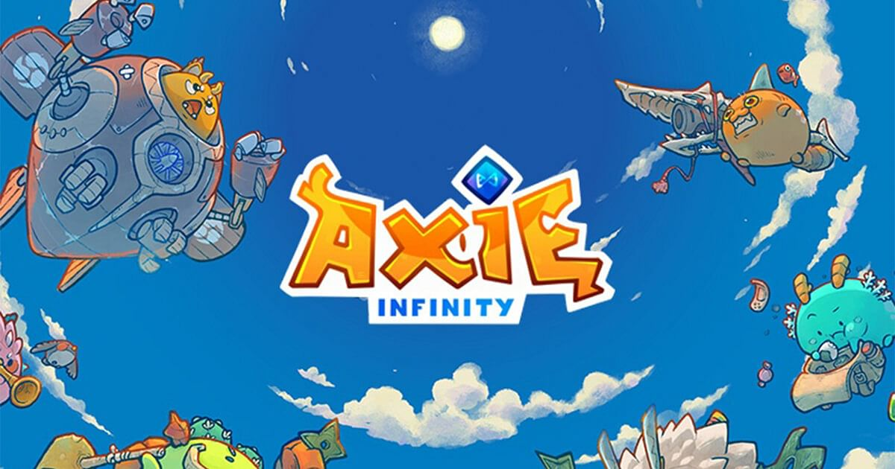

<!DOCTYPE html>
<html lang="en">

<head>
    <link rel="shourcut icon" type="imgae/x-icon" href="book-svgrepo-com (1).svg">
</head>
<meta charset="UTF-8">
<meta http-equiv="X-UA-Compatible" content="IE=edge">
<meta name="viewport" content="width=device-width, initial-scale=1.0">
<title>LIFELABS_PBA</title>
</head>

<body>
    <script src='lifelabs.js'></script>
</body>

</html>
<link rel="stylesheet" href="style.css">
</head>

<body>
    <h1>Time:<div class="clock"></div>
    </h1>
</body>

<body>
    <header>
        
        <ul class="nav_links">
            <li><a href="about.html">About</a></li>
            <li><a href="research.html">Research</a></li>
            <li><a href="References.html">References</a></li>
        </ul>
        </nav>
    </header>
</body>

<h1>INTRODUCTION TO STREAMING</h1>


<h2> What is Streaming? </h2>
<p>Streaming refers to any media content – live or recorded – delivered to computers and mobile devices via the internet
    and played back in real time. Podcasts, webcasts, movies, TV shows and music videos are common forms of streaming
    content.
</p>
<center></center>


<h3>How do I Know What Content to Create for Streaming?</h3>
<p>The help of Design Thinking Process it helps us to know what content to create for streaming.
    On these times of pandemic many people are having financial problems, and we also noticed that many people is using
    gaming as their hobby. Basically they need to earn money. We’re trying to help the people that are having financial
    problems and we can give them ideas about our project. Our chosen project is play-to-earn games. It will be very
    beneficial to people who play games and want to earn money at the same time. </p>
<center> </center>

<p> We thought of this because most of the problems that are currently happening right now are about financial
    issues/problems. Due to the pandemic. With our project, we are trying to show/promote that can help in such ways. We
    thought about the Axle Infinity Game, it is a play to earn game. You can play it on any devices such as Android
    phones,
    IPhones, and on PC. Axie Infinity can not only use skills in gaming but also to help them if they have financial
    problems. </p>

<h1>What are The Platforms Used for Streaming?</h1>
<p> Here are some platforms we collected that is used for streaming
    Twitch, Youtube Live, Facebook Live, Spotify, Hololive etc.</p>
<center></center>
<center></center>

<h2>Who Watches These?</h2>
<p>We used the contents that is popular nowadays like, Music, Mukbang, and Gaming.</p>

<h3>Music (Spotify Streaming)</h3>
<p>Streaming music, or more accurately streaming audio, is a way of delivering sound — including music — without
    requiring
    you to download files from the internet. Music services like Spotify, Pandora, and Apple Music use this method to
    provide songs that can be enjoyed on all types of devices. Music, in general, has, or can have a variety of
    practical
    applications. Social value, Entertainment value, Therapeutic value, Functioning-enhancement value, and
    Self-affirmation
    value are some of the practical values of music.</p>
<center>

    <h1>Mukbang</h1>
    <p>A mukbang or meokbang (Korean: 먹방), also known as an eating show, is an online audiovisual broadcast in which a
        host
        consumes various quantities of food while interacting with the audience. It became popular in South Korea in
        2010, and
        since then has become a global trend.
        Eating shows (Mukbangs) are expanding their influence in internet broadcasting platforms and serve as a virtual
        community and a venue for active communication among active internet users.</p>
    <center>

        <h1>Gaming(Minecraft)</h1>
        <p>Minecraft is a video game that is an open world sandbox game that has mixed elements such as survival,
            building, crafting,
            exploration and combat. The purpose of this game is to build, explore and survive. Minecraft is suitable for
            users aged
            10 and up.</p>
        <p>Minecraft is a form of ‘pop culture’ in many various ways. It gives entertainment not only for the kids but
            also for
            adults. With millions of videos uploaded specifically about Minecraft, there’s no better place to start.
            Minecraft has
            become a very large part of the video-sharing website over the years.</p>
        <center>

            <h2>How Will I Find a Need of Viewers in a Streaming Category?</h2>
            <p>We used the Streaming Content ‘Mukbang’ for this research because it is much easier since many people do
                watch mukbang
                even adults and children do watch mukbang.</p>

            <h1>5 Whys</h1>
            <p>Why Mukbang is so Popular?</p>
            <p>There are multiple reasons why mukbangs are unusually popular, one of these is a person’s sense of social
                isolation.</p>
            <p>Why is watching mukbang appealing to others?</p>
            <p>Because looking at the images/videos about food increases the person’s desire for it as well as the
                satiation of hunger.</p>
            <p>Why is mukbang famous on the internet?</p>
            <p>Because it is usually demonstrated through online audiovisual broadcast, where the host of the video
                interacts with the
                audience while eating huge quantities of food.</p>
            <p>Why do people watch mukbang?</p>
            <p> Watching mukbang somehow appears to help individuals satisfy their cravings and have a vicarious
                satiation via visual
                and audio stimulation. </p>
            <p>Why there's a lot of risk when you're doing a mukbang?</p>
            <p>Eating regularly like this could lead to bigger issues such as heart disease, obesity, diabetes, high
                blood pressure,
                and certain types of cancer. Unfortunately, because topics like these aren't glamorous and attractive to
                subscribers,
                mukbangers often edit them out. </p>
            <p>Root Cause: For entertainment purposes, some people are bored so they watch mukbangs.</p>

            <h2>What-How-Why</h2>
            <p>What: What do people enjoy while watching mukbang?</p>
            <p>One possible motivation for mukbang viewers was that they were forming a kind of viewing community by
                interacting and
                communicating with one another on a common interest, which promoted elevated feelings of pleasure and
                belonging.</p>

            <h3>How: How do people enjoy watching mukbang?</h3>
            <p>Some people find the sounds of chewing, sipping, and slurping extremely relaxing, and they fire up the
                videos for the
                sounds over the physical eating of mukbang.</p>

            <h1>Why: Why is mukbang so popular especially for its viewers?</h1>
            <p>Some people just really like watching someone eat whatever food there is to somehow satisfy their
                cravings.</p>

            <p>Root Cause: Addictive and satisfying to watch.</p>

            <h3>The Need of Our Audience</h3>
            <p>The need of our audience is to satisfy their cravings by watching mukbang and for entertainment for them
                to not be
                bored.</p>

            <h1>What makes the stream good?</h1>
            <p>Based on our opinions what makes the stream good is the Entertainment , Fun , Popularity, Content,
                Healthy Community and lastly You can Learn from It.</p>